11 plates. Deterministic overlays rendered by the composition-analysis skill.
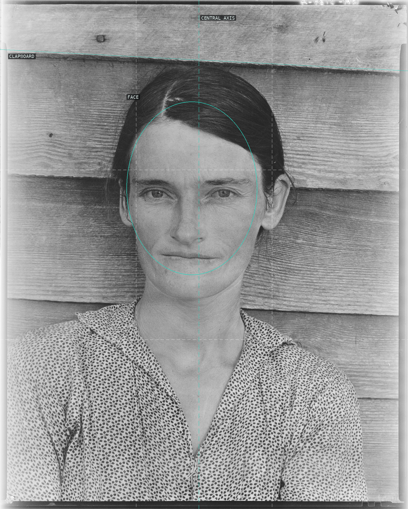
01-allie-mae-burroughs A frontal portrait built on a vertical mirror axis: the face centered on the spine of the frame, set against the flat horizontal banding of the clapboard wall.
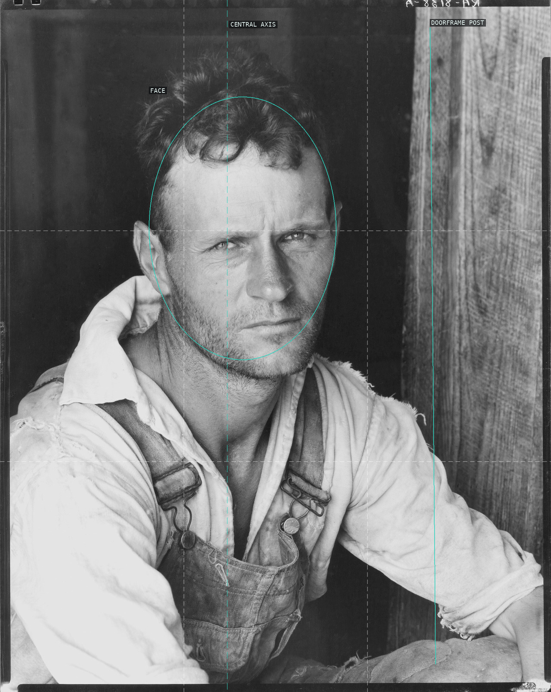
02-floyd-burroughs A frontal tenant-farmer portrait built on a vertical mirror axis: the weathered face centered on the spine of the frame, wedged between the dark doorway void at left and the raw timber doorframe post at right.
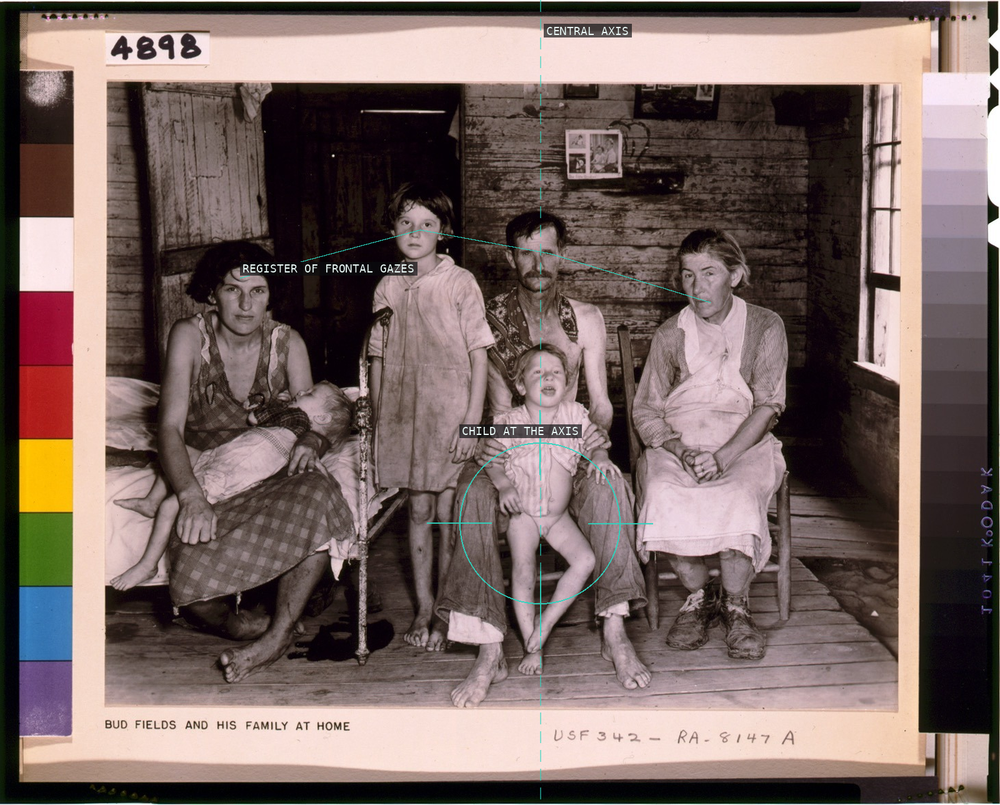
03-bud-fields-family A flattened frontal frieze: six faces line up in a shallow register across the plane, the group balanced on a central vertical through Bud and the child seated dead-center at its base.
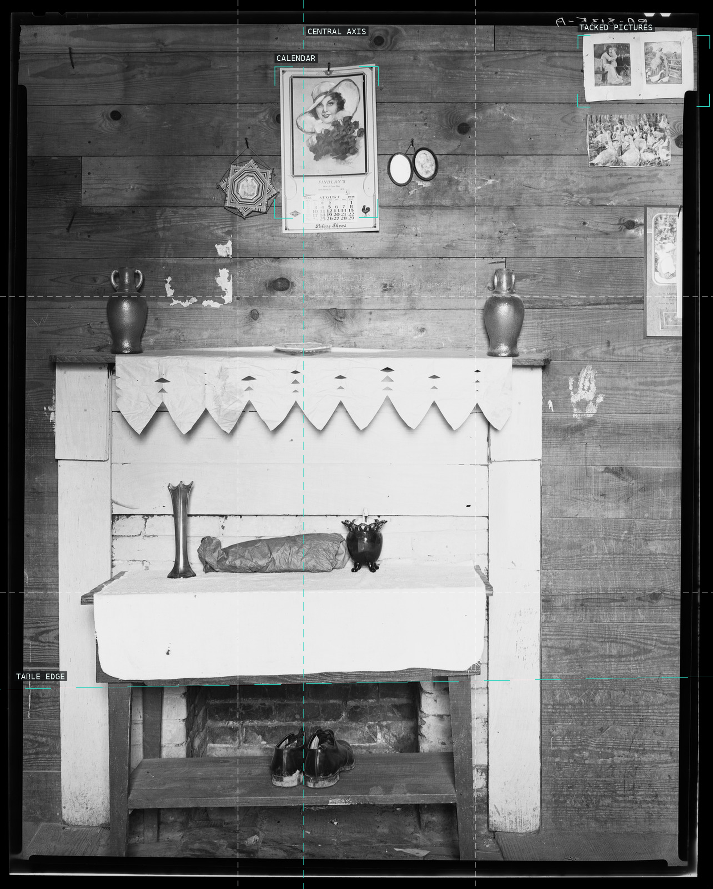
04-fireplace-wall-burroughs The wall is the picture plane: a bilaterally symmetric fireplace banded by strong horizontals, its tacked calendar and pictures read as a flat frontal grid of rectangles.
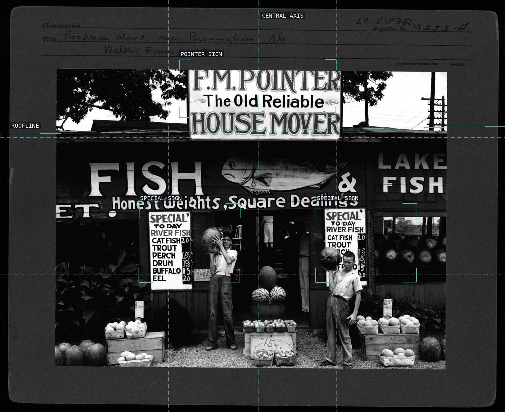
05-roadside-stand-birmingham Dead-frontal facade: hand-lettered signs stack into typographic rectangles that mirror across a central axis beneath a ruler-flat roofline.
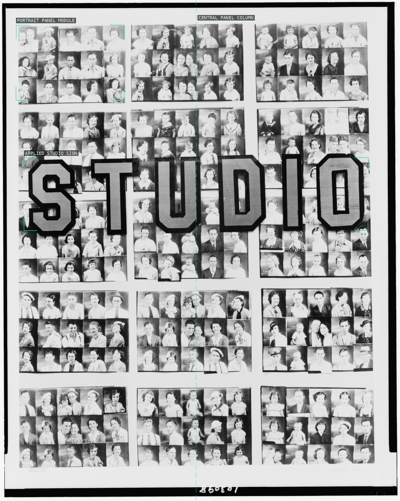
06-penny-picture-display-savannah An all-over grid of grids: identical studio-portrait panels tile the frame with no horizon or depth, the whole field mirrored on a central vertical axis, and the only break in the uniform typology is the applied STUDIO lettering banded across the middle.
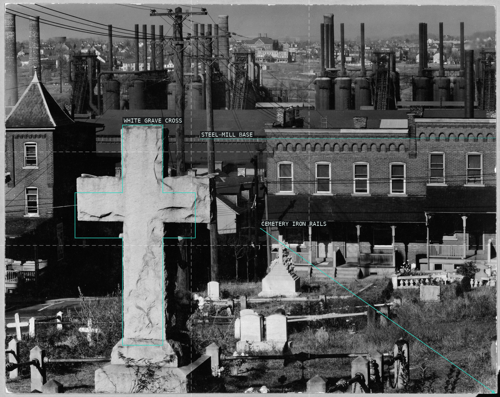
07-bethlehem-graveyard-steel-mill Three stacked registers - a white grave cross in front, brick row houses, and the steel mill's furnaces and stacks behind - the living town wedged between the dead and the works.
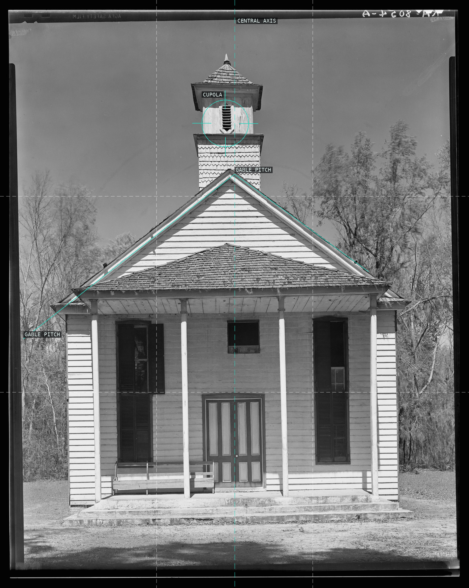
08-negro-church-south-carolina A dead-frontal church built on a vertical mirror axis: cupola, gable peak, transom and central door stack on the spine while the twin roof pitches converge on that axis, twin gothic windows mirroring left and right.
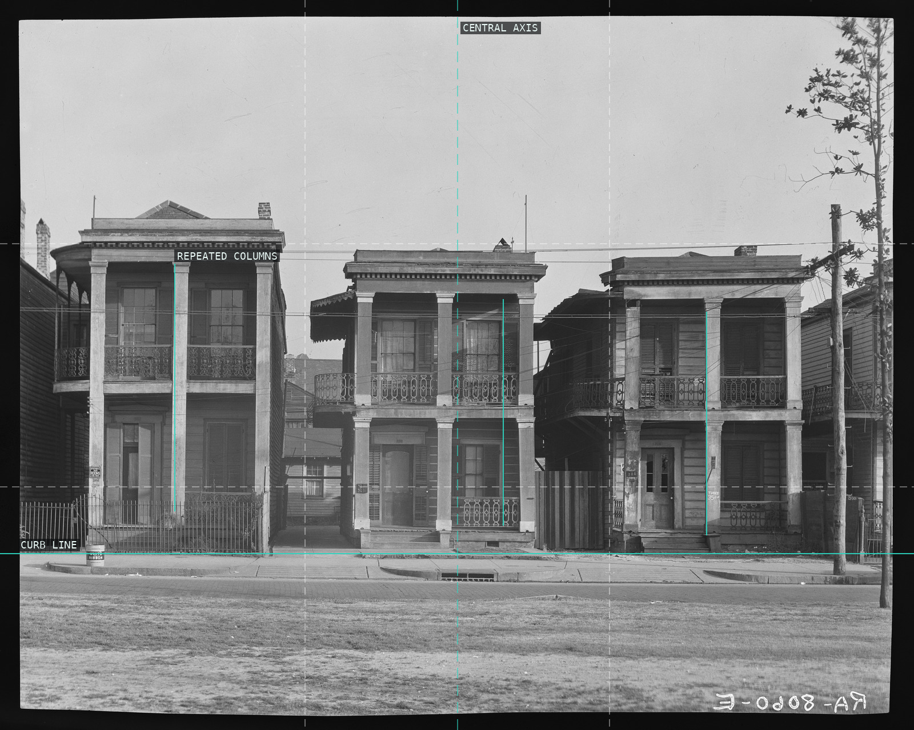
09-frame-houses-new-orleans Frontal facades read as a flat frieze: the porch columns beat a repeated vertical rhythm across three near-identical houses, squared to the picture plane above the horizontal curb.
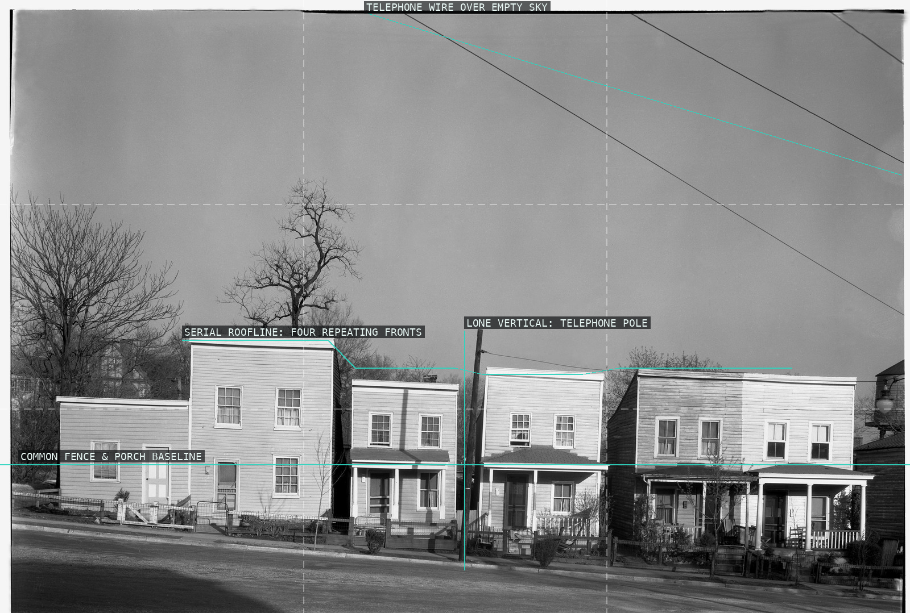
10-frame-houses-fredericksburg Four near-identical frame houses march along a low common baseline as serial rhythm, dwarfed by an empty sky that a lone pole punctuates and a wire slashes.
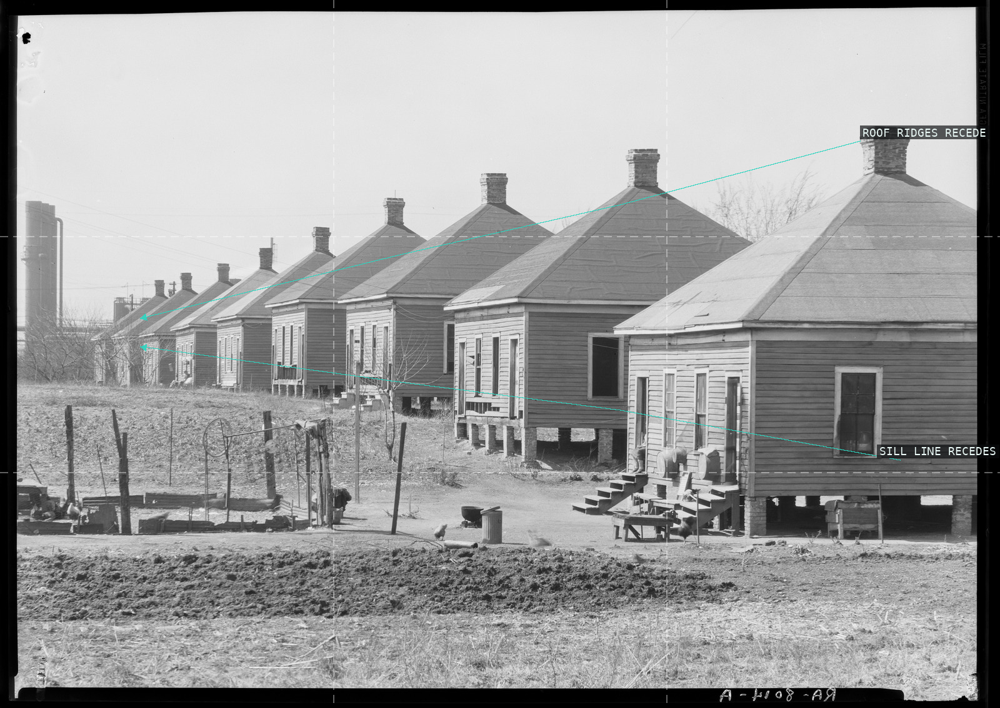
11-company-houses-birmingham Identical hip-roof company houses march in diminishing repetition from the looming near house at right; converging roof ridges and sill lines pinch toward a vanishing point off the left edge, regimenting industrial labor housing into pure receding perspective.